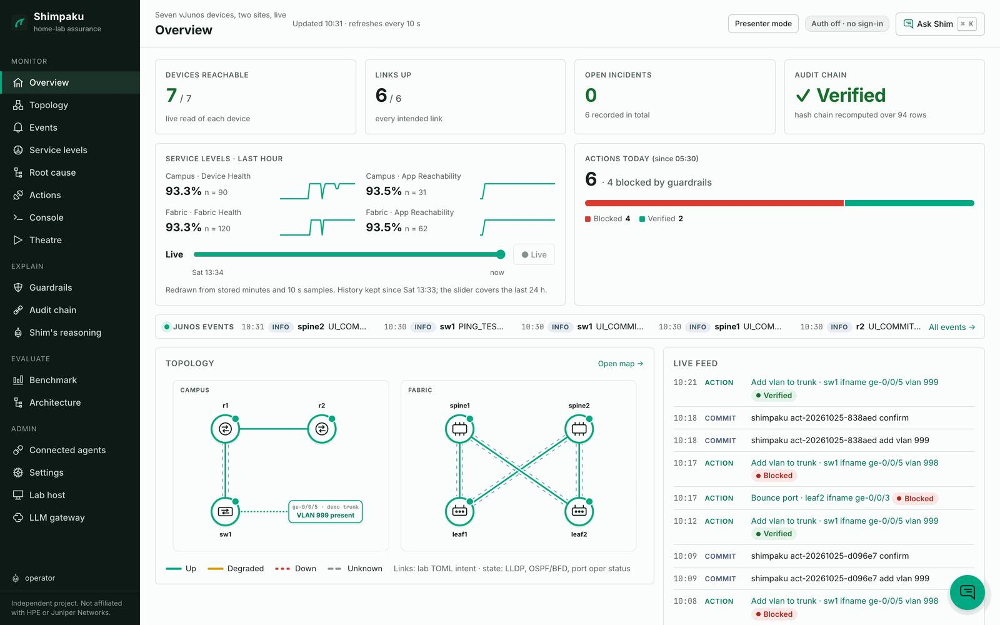

Shimpaku
Seven real Junos devices run as VMs on one hypervisor, streaming telemetry every 10 seconds, and you can watch them live. Shimpaku is a Mist-style assurance system on top of them: it turns that telemetry into service levels, isolates a fault's blast radius, and lets an AI agent propose a fix, but never apply one on its own.
Live status could not be loaded here. The dashboard shows the live lab when it is online and a recorded replay when it is not; the status page has uptime.

The public dashboard is a read-only replay recorded from the live lab. The switches are never reachable from the internet.
Seven real Junos devices, live
The lab is not a simulation of a network: it is seven Junos VMs on one libvirt/KVM host, a campus (r1, r2, sw1) and a two-spine, two-leaf EVPN-VXLAN fabric. Each streams gNMI telemetry every 10 seconds and answers NETCONF reads, and every number on the dashboard comes from them. The dashboard's Hardware view draws each one as a front panel whose port LEDs, traffic blinks, CPU and memory are read live.
The images run the same Junos OS as real hardware, per Juniper's own documentation: vJunos-switch is built "using EX9214 as a reference Juniper switch", and vJunos-router "using vMX as a reference Juniper router", with "feature consistency with the physical MX Series platforms". What they do not have is the hardware's forwarding: the data plane is software in an x86 VM, limited to "up to 100 Mbps aggregated over all the interfaces", and Juniper says they are for labs only. (vJunos-switch, vJunos-router.)
- r1 vJunos-routercampus router
- r2 vJunos-routercampus router
- sw1 vJunos-switchaccess switch
- spine1 vJunos-switchfabric spine
- spine2 vJunos-switchfabric spine
- leaf1 vJunos-switchfabric leaf
- leaf2 vJunos-switchfabric leaf
This list is static. Live state is on the dashboard and in the status strip above.
on one KVM host, 4 vCPU and 5 GiB each as declared in the lab files: Juniper's minimum
gNMI dial-in telemetry from every device, plus NETCONF reads; no SNMP
the reference platforms Juniper names for vJunos-switch and vJunos-router
The write path is the product
- ProposeAn agent (Claude Code, OpenCode, or the built-in assistant) calls an MCP tool.
- GuardrailsTen checks in Python, over live device facts, not prompt rules.
- Human approvalOnly a dashboard session can approve. It is not an MCP tool.
- commit confirmedPer-device lock; confirmed only after a fresh health check. If the executor dies, Junos rolls back.
- ValidateThe symptom is watched for a window. If it comes back, the action is marked recurred.
Break it, watch it get fixed
You can watch a real fault happen. With Virga, the fault-injection
benchmark, the operator injects a catalogued fault into the live lab (a real Junos commit, made through the
same lease, journal and commit confirmed as the benchmark), then reverts it and checks the revert.
While a drill runs, the strip above says fault drill running, the dashboard's
Fault lab, Topology and Theatre show it as it is detected, and the
status page's "Live lab" group turns red on purpose, then green again once
the fault is reverted. Anyone can watch; only the operator can inject.
commit confirmed,
health-checked from a fresh session and confirmed, then watched for a validation window until it reads
Verified. Every step carries its recorded time.The same thing as text
- Fault injected: VLAN 999 removed from the sw1 ge-0/0/5 trunk; the trunk turns red.
- A fix is proposed (by a tester's session here); ten guardrail checks pass, each shown as a tick.
- It is approved; the executor commits with
commit confirmed. - A fresh-session health check passes, the commit is confirmed, the trunk turns green.
- A countdown runs through the validation window, then the run is marked Verified.
Recorded from a real run on 2026-10-25 against the vJunos lab, action act-20261025-838aed: first dip 9.5 s after the fault, commit confirmed in 16 s, 180 s validation window, Verified. Gaps over 12 s are fast-forwarded and labelled in the clip. No incident opened, because the fault was too brief.
Deploy your own
Like the demo? Run the whole lab, all seven devices plus Shimpaku and the Virga fault lab, on a spare machine of your own. The installer runs on your computer and talks to your hypervisor over SSH; it checks the machine first, says what it will change, and can remove exactly that again.
- BringA bare-metal x86_64 Linux machine with nested KVM (about 40 GiB of free RAM for all seven devices), and the two vJunos images, which you download yourself from Juniper's free lab page.
- Run one lineOn your computer (or on the hypervisor itself, with
sudo). It asks for the address and the images, checks the machine read-only, shows the plan and builds the lab on your yes. The boot takes 5 to 10 minutes. - OpenAn SSH tunnel to
127.0.0.1:8780and the same dashboard is yours.
curl -fsSL https://{{.Host}}/install.sh | bash
# asks for your hypervisor, checks it (read-only), shows the plan, deploys on your yes
You type the root password into the installer on your own computer, never into this website. Juniper does not support vJunos inside a virtual machine, so the host must be bare metal.
Evidence, run on the live lab
unsafe actions executed in a live red team: forged approvals, wildcard and interface-range smuggling, fabric-link disables
fault-injection harness trials (16 scenarios × 5): inject, verify independently, revert, verify the revert
measured Junos self-rollback after killing the executor mid-change
defects found by running it, each written up with its fix and test, including one false "verified"
What it is, and is not
| Built | Deliberately not built |
|---|---|
Service levels in probe-minutes, with n beside every percentage | Wi-Fi capacity SLEs: virtual radios report no retries |
| Blast-radius isolation with a significance gate | LSTM anomaly detection: a rate test beat it on false alarms (simulated data) |
| One MCP server as the only path to a device, hash-chained audit | Any connection to a real Mist account, its data or its look |
| A fault benchmark whose ground truth the system cannot read | A scored detection result, which is the next milestone |